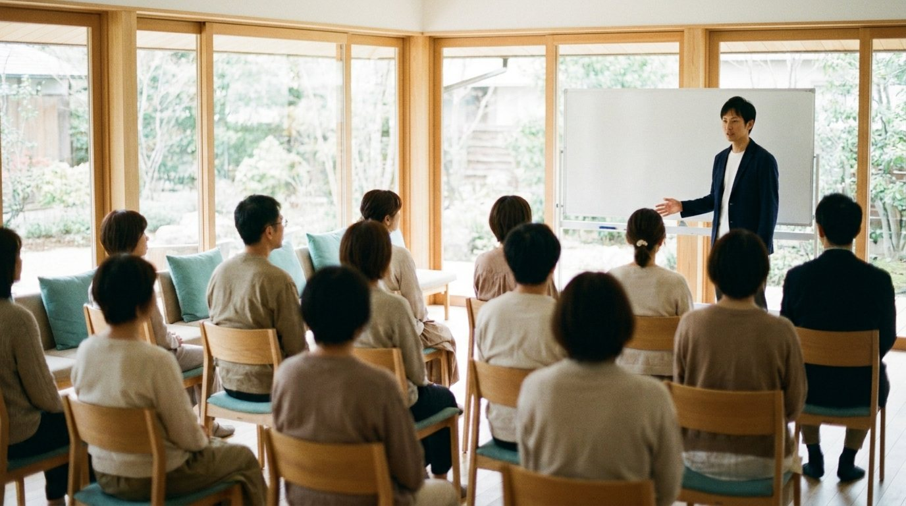

売らなくても、「何かあればこの人に」と呼ばれる。
その手前にある考え方を、10回に分けて話しています。
写真はイメージです。
THE FUTURE
保険の話をする時間が短くなるのに、相談は増えていく。そんな営業の毎日を、3つの場面で。
「〇〇さんに聞けば、
だいたい分かるから」
紹介のLINEが、会社名ではなく、あなたの名前で届く。
「必要ないです」と
言った人から、また呼ばれる
売らなかった相談が、次の相談とご友人を連れてくる。
保険の見直しで来た人が、
帰りに親の家の話をしていく
悩みは一本の線。その線ごと任せてもらえる。
WHY
「やっぱり売りに来た」と身構えられ、話が入らない。
保険は道具の一つ。合わなければ、別の道具を出せばいい。
VOICES
やり方を変えても、同じところで止まる。止まっているのは、やり方の手前でした。
10 EPISODES
1本聴いたらスタンプを押してください。次の回がひらきます。通勤や移動のあいだに、1本ずつどうぞ。

SPEAKER
もりかわ みちあき｜fulfull株式会社 代表
1986年 岩手県出身・横浜在住。ヤマト運輸のドライバーから、お金の勉強会とライフプラン相談の仕事へ。保険は、生徒さんの声で2023年の秋から扱い始めました。
1 ON 1
森川と1対1で話す、30分の個別相談です。Zoomで行います。放送の感想でも、いま止まっていることでも、テーマは自由です。
カレンダーから日時を選び、カードでお支払いいただくと、Zoomのご案内がメールで届きます。3週間先まで予約できます。
空いている日時を選ぶ
返信は、森川が全部読んでいます。短い一言で大丈夫です。
まだの方は、LINEに登録する5問の「AI相棒診断」の結果画面から、LINEに登録できます。無料です。